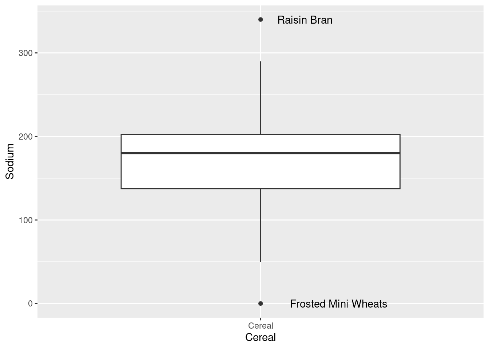
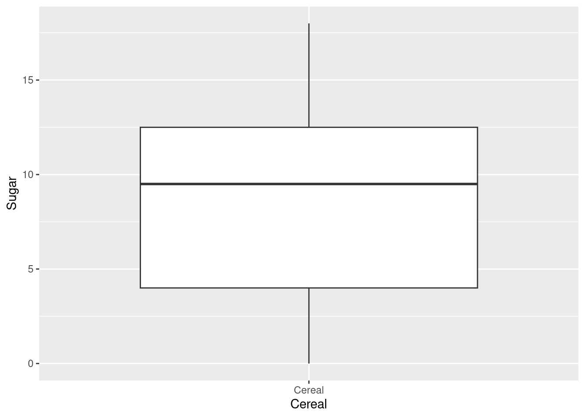
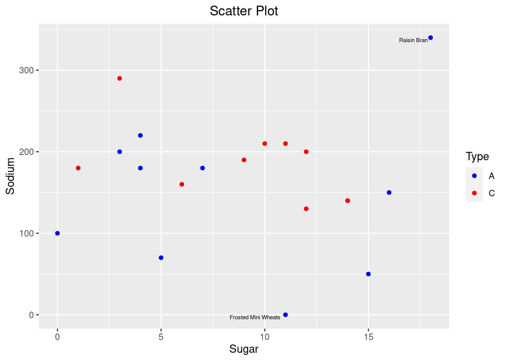

Code
library(tidyverse)
library(readr)
knitr::opts_chunk$set(echo = TRUE)Surya Praneeth Reddy Chirasani
January 15, 2023
The dataset includes sodium and sugar content for 20 cereals which are categorized into two types A or C. There isn’t any information regarding what the types mean
Rows: 20 Columns: 4
── Column specification ────────────────────────────────────────────────────────
Delimiter: ","
chr (2): Cereal, Type
dbl (2): Sodium, Sugar
ℹ Use `spec()` to retrieve the full column specification for this data.
ℹ Specify the column types or set `show_col_types = FALSE` to quiet this message.# A tibble: 20 × 4
Cereal Sodium Sugar Type
<chr> <dbl> <dbl> <chr>
1 Frosted Mini Wheats 0 11 A
2 Raisin Bran 340 18 A
3 All Bran 70 5 A
4 Apple Jacks 140 14 C
5 Captain Crunch 200 12 C
6 Cheerios 180 1 C
7 Cinnamon Toast Crunch 210 10 C
8 Crackling Oat Bran 150 16 A
9 Fiber One 100 0 A
10 Frosted Flakes 130 12 C
11 Froot Loops 140 14 C
12 Honey Bunches of Oats 180 7 A
13 Honey Nut Cheerios 190 9 C
14 Life 160 6 C
15 Rice Krispies 290 3 C
16 Honey Smacks 50 15 A
17 Special K 220 4 A
18 Wheaties 180 4 A
19 Corn Flakes 200 3 A
20 Honeycomb 210 11 C Looking at the entire data I don’t see the need for tidying data
I want to plot a histogram to see in what ranges or distribution sodium and sugar contents lie
In the histogram for Sodium there is missing data in some bins, which could mean there are outliers. We can identify them by plotting a box plot. So for this reason now I am plotting a box plot
is_outlier <- function(x) {
return(x < quantile(x, 0.25) - 1.5 * IQR(x) | x > quantile(x, 0.75) + 1.5 * IQR(x))
}
cereal_data %>%
mutate(outlier = ifelse(is_outlier(Sodium), Cereal, as.numeric(NA))) %>%
mutate(Cereal= 'Cereal') %>%
ggplot(., mapping=aes(x=Cereal, y=Sodium))+geom_boxplot()+ geom_text(aes(label = outlier), na.rm = TRUE, hjust = -0.3)
Indeed there are outliers in the boxplot!
is_outlier <- function(x) {
return(x < quantile(x, 0.25) - 1.5 * IQR(x) | x > quantile(x, 0.75) + 1.5 * IQR(x))
}
cereal_data %>%
mutate(outlier = ifelse(is_outlier(Sugar), Cereal, as.numeric(NA))) %>%
mutate(Cereal= 'Cereal') %>%
ggplot(., mapping=aes(x=Cereal, y=Sugar))+geom_boxplot()+ geom_text(aes(label = outlier), na.rm = TRUE, hjust = -0.3)
The histogram for sugar didn’t have any empty bins and so as observed in the boxplot there are no outliers
In order to observe the relationship between Sodium and Sugar, I want to plot a scatter plot with Sodium on y-axis and Sugar in x-axis and see if there are some cereals which has high sugar and low in sodium and viceversa
Looking at the scatterplot, there are all kinds of cereals with no particular relationship. Maybe there could be a relationship when we highlight cereals based on their type
is_outlier <- function(x) {
return(x < quantile(x, 0.25) - 1.5 * IQR(x) | x > quantile(x, 0.75) + 1.5 * IQR(x))
}
cereal_data %>%
mutate(outlier = ifelse(is_outlier(Sugar) | is_outlier(Sodium), Cereal, as.numeric(NA))) %>%
ggplot(., aes(x = Sugar, y = Sodium, color=Type)) + theme(plot.title = element_text(hjust = 0.5)) +
geom_point() +
scale_colour_manual(values = c("blue", "red")) +
geom_text(aes(label = outlier), color="black", na.rm = TRUE, hjust=1.1, vjust=1.1, size = 2) +
labs(title = "Scatter Plot", x = "Sugar", y = "Sodium")
There is no particular relationship between cereals of each type as there are spread out in the graph. But plotting the scatter plot helped in visualizing the data more clearly
---
title: "Challenge 5: Introduction to Visualization"
author: "Surya Praneeth Reddy Chirasani"
description: ""
date: "01/15/2023"
format:
html:
toc: true
code-fold: true
code-copy: true
code-tools: true
categories:
- challenge_5
- cereal
---
```{r}
#| label: setup
#| warning: false
library(tidyverse)
library(readr)
knitr::opts_chunk$set(echo = TRUE)
```
## Data Description
The dataset includes sodium and sugar content for 20 cereals which are categorized into two types A or C. There isn't any information regarding what the types mean
```{r}
cereal_data <-read_csv("_data/cereal.csv")
cereal_data
```
## Tidying Data
Looking at the entire data I don't see the need for tidying data
## Univariate Visualization
I want to plot a histogram to see in what ranges or distribution sodium and sugar contents lie
```{r}
ggplot(cereal_data, aes(x=Sodium)) +
geom_histogram(bins=10)
```
```{r}
ggplot(cereal_data, aes(x=Sugar)) +
geom_histogram(bins=10)
```
In the histogram for Sodium there is missing data in some bins, which could mean there are outliers. We can identify them by plotting a box plot. So for this reason now I am plotting a box plot
```{r}
is_outlier <- function(x) {
return(x < quantile(x, 0.25) - 1.5 * IQR(x) | x > quantile(x, 0.75) + 1.5 * IQR(x))
}
cereal_data %>%
mutate(outlier = ifelse(is_outlier(Sodium), Cereal, as.numeric(NA))) %>%
mutate(Cereal= 'Cereal') %>%
ggplot(., mapping=aes(x=Cereal, y=Sodium))+geom_boxplot()+ geom_text(aes(label = outlier), na.rm = TRUE, hjust = -0.3)
```
Indeed there are outliers in the boxplot!
```{r}
is_outlier <- function(x) {
return(x < quantile(x, 0.25) - 1.5 * IQR(x) | x > quantile(x, 0.75) + 1.5 * IQR(x))
}
cereal_data %>%
mutate(outlier = ifelse(is_outlier(Sugar), Cereal, as.numeric(NA))) %>%
mutate(Cereal= 'Cereal') %>%
ggplot(., mapping=aes(x=Cereal, y=Sugar))+geom_boxplot()+ geom_text(aes(label = outlier), na.rm = TRUE, hjust = -0.3)
```
The histogram for sugar didn't have any empty bins and so as observed in the boxplot there are no outliers
## Bivariate Visualizations
In order to observe the relationship between Sodium and Sugar, I want to plot a scatter plot with Sodium on y-axis and Sugar in x-axis and see if there are some cereals which has high sugar and low in sodium and viceversa
```{r}
ggplot(cereal_data, aes(Sugar , Sodium)) + geom_point()
```
Looking at the scatterplot, there are all kinds of cereals with no particular relationship. Maybe there could be a relationship when we highlight cereals based on their type
```{r}
is_outlier <- function(x) {
return(x < quantile(x, 0.25) - 1.5 * IQR(x) | x > quantile(x, 0.75) + 1.5 * IQR(x))
}
cereal_data %>%
mutate(outlier = ifelse(is_outlier(Sugar) | is_outlier(Sodium), Cereal, as.numeric(NA))) %>%
ggplot(., aes(x = Sugar, y = Sodium, color=Type)) + theme(plot.title = element_text(hjust = 0.5)) +
geom_point() +
scale_colour_manual(values = c("blue", "red")) +
geom_text(aes(label = outlier), color="black", na.rm = TRUE, hjust=1.1, vjust=1.1, size = 2) +
labs(title = "Scatter Plot", x = "Sugar", y = "Sodium")
```
There is no particular relationship between cereals of each type as there are spread out in the graph. But plotting the scatter plot helped in visualizing the data more clearly